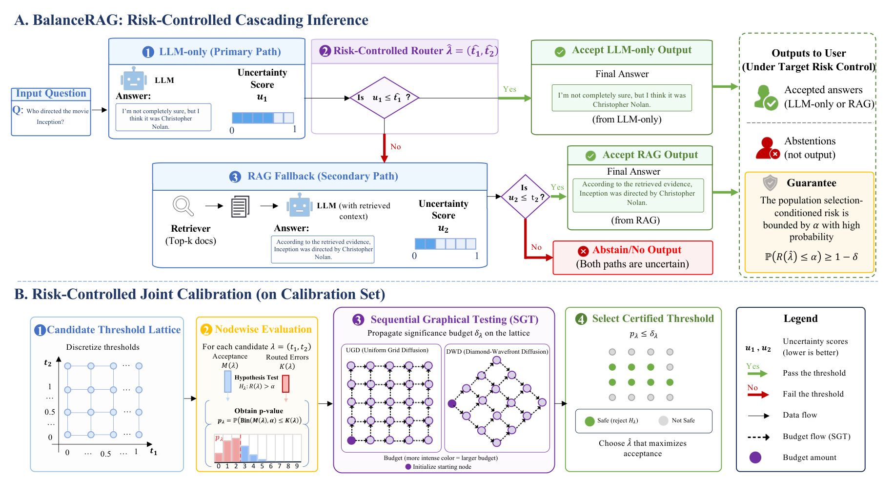
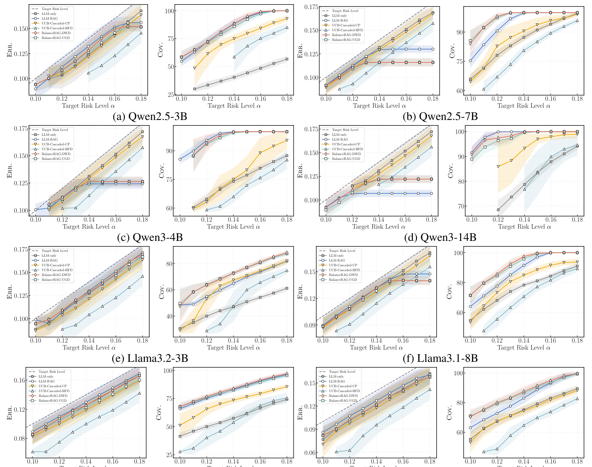
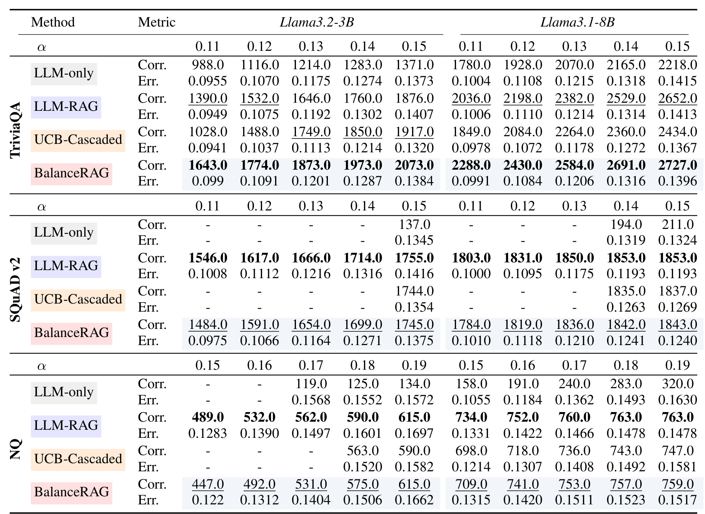
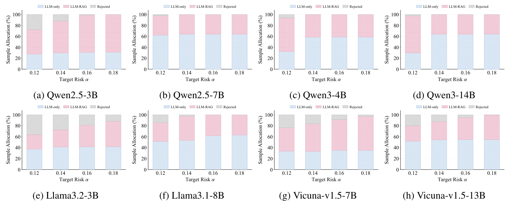

BalanceRAG：BalanceRAG: Joint Risk Calibration for Cascaded Retrieval-Augmented Generation
这里精读一篇最近公开的论文《BalanceRAG: Joint Risk Calibration for Cascaded Retrieval-Augmented Generation》。中文可以叫《级联 RAG 的联合风险校准》。
论文链接：arXiv:2605.20084
作者：Zijun Jia, Yuanchang Ye, Sen Jia, Yiyao Qian, Haoning Wang 等
机构/团队：Beihang University 等
公开日期：2026-05-19，来源：arXiv cs.CL / cs.AI，arXiv ID：2605.20084。
代码/项目页：摘要未给出代码链接，本轮未核验到独立项目页。
0. 导读
BalanceRAG 关注的是 RAG 工程里最现实的问题：不是每个问题都应该检索。简单问题直接让 LLM 回答更便宜，知识密集或高风险问题需要 RAG，两个分支都不可靠时应该 abstain。难点在于阈值不能逐个分支独立调，因为最终风险取决于路由后的整体系统。BalanceRAG 把这个问题写成联合阈值校准，目标是给级联 RAG 一个可验证的风险边界。
这篇论文和每日关注范围的关系很直接：它不是孤立的模型技巧，而是围绕推荐、检索、RAG、Agent 或大模型服务链路里的真实约束展开。下面按问题、方法、图表、实验和工程判断展开。
1. 背景与问题
很多 RAG 系统默认 always-on retrieval，但检索并不总是有益。它会带来延迟、token 成本、索引维护成本，也可能引入噪声 context，让原本 LLM 能回答的问题被干扰。另一方面，完全省略检索又会增加幻觉和事实错误。
Adaptive RAG 已经提出按复杂度或不确定性路由，但常见方法偏启发式，缺少有限样本风险保证。对于企业知识库、客服、医疗法律等场景，只看平均准确率不够，用户更关心“被系统接受输出的答案中错误率能不能控制在某个水平”。
BalanceRAG 的关键问题是：给定 LLM-only 和 LLM-RAG 两个分支各自的不确定性分数，如何选择一对阈值，使 accepted answers 的 selection-conditioned risk 小于目标 alpha，同时 coverage 尽可能高。
更抽象地看，论文要回答的是一个资源分配问题：在模型能力、上下文信息、候选预算、延迟预算或业务约束都有限时，怎样把计算放到最有价值的位置。这个问题和推荐系统里的召回预算、排序链路、广告出价、用户长期价值建模是一类问题，只是本文落在 RAG 场景。
2. 核心方法
系统首先采用级联结构：query 先走 LLM-only；若第一分支不确定，再走 RAG；如果 RAG 分支也不满足阈值，则拒答。这里有两个阈值 t1、t2，分别对应 LLM-only 和 RAG 分支的不确定性。
BalanceRAG 将所有候选阈值对看作二维 lattice 上的 operating points。每个点对应一套路由策略，可以在 calibration set 上计算 accepted count 与 routed errors。问题变成：哪些 lattice points 在目标风险 alpha 下是安全的。
为避免简单 Bonferroni 或逐点检验过于保守，论文使用 sequential graphical testing，在 lattice 上分配和传播显著性预算，认证 safe operating points。最后选择安全点中 acceptance 最大的阈值对。
论文还扩展到 multi-risk calibration，不只控制 selection-conditioned answer risk，还能给 retrieval usage/fallback rate 之类成本指标设上限。这对线上 RAG 很重要，因为企业往往同时有答案质量约束和成本预算约束。
我在阅读时更关注模块之间的接口，而不只是模块名称。本文的共同特点是：把原本隐含在工程经验里的决策变量显式化，例如阈值、预算、缓存、维度、控制信号或刷新间隔。显式化之后，系统才有可能被校准、复现、迁移和线上监控。
3. 图表解读

图 2 展示 BalanceRAG 的整体流程。左侧是 LLM-only、RAG fallback、abstain 的级联推理；右侧是 calibration set 上的阈值 lattice 与 sequential graphical testing。它把“路由策略”从手工规则变成了可校准的统计对象。

图 4 比较不同 target risk level 下的 Err. 与 Cov.。可以看到 BalanceRAG 在多个 backbone 上让 empirical error 贴近目标风险，同时 coverage 更高。直观上，它没有像保守方法那样过度拒答，也没有像 always-on/heuristic routing 那样失控。

表 1 汇总 TriviaQA、SQuAD v2、NQ 的结果。BalanceRAG 在很多设置下接受更多正确样本，同时保持 Err. 近似低于风险阈值。它证明联合阈值比逐分支校准更能利用 LLM-only 与 RAG 分支的互补性。

图 6 展示样本路由比例。随着目标风险放宽，LLM-only 接受、RAG fallback 和 rejected 的占比会变化。这个图对工程很有用，因为它直接告诉我们质量目标如何转化为检索调用量和拒答率。
4. 实验与结果
论文在 TriviaQA、SQuAD v2、Natural Questions 三个开放域 QA benchmark 上，使用多个 LLM backbone 评估。结果显示 BalanceRAG 可以满足 prescribed risk levels，同时保持更高 coverage 和更多 correctly accepted examples，并减少 always-on RAG 的不必要检索。论文还比较了多种不确定性估计方式、不同 calibration-test split、multi-risk routing 和定性案例。
这些结果的边界也要看清。论文报告的指标主要证明当前问题定义下的方法有效，但并不等价于所有生产链路都会得到同等收益。尤其是推理系统论文要区分 decoding time、end-to-end latency 和服务端吞吐；RAG/Agent 论文要区分 benchmark score、真实用户满意度和长期维护成本；工业推荐/平台论文要区分离线回放、短期 A/B 和长期生态影响。
5. 我的理解
我认为 BalanceRAG 的意义在于，它把 RAG 的“是否检索”从模型策略问题转成了系统可靠性问题。实际业务里，RAG 不只是提升答案正确率的技巧，而是一个带成本和风险的 fallback branch。对推荐系统也类似：召回、精排、重排、生成解释都可以看作级联系统，每一级都有成本和错误风险。BalanceRAG 的二维 lattice 校准可以迁移到“轻模型先判，重模型兜底，低置信拒绝”的多阶段推荐链路。
从研究脉络看，这类工作共同说明一个趋势：大模型和推荐系统都在从“单模型效果”走向“系统级可控”。以前我们常把模型能力看成主要变量，现在越来越多论文开始处理部署预算、缓存策略、风险校准、候选预算、跨城市迁移、长期状态记忆等问题。这些问题不一定在排行榜上最耀眼，却更接近真实业务系统里的主要瓶颈。
6. 工程启发与复现建议
复现时需要准备三类数据：校准集、测试集、两个分支的输出和不确定性分数。第一步先实现 LLM-only 与 RAG 两条分支，使用相同 correctness evaluator 生成 error label；第二步枚举 t1/t2 阈值网格，计算每个点的 accepted count 和 error count；第三步实现 SGT 预算传播并选择 coverage 最大的 safe point。线上部署要持续监控分布漂移，一旦 query 类型、知识库或模型版本变化，就要重新校准。
如果要把这篇论文纳入自己的技术栈，我建议先做最小闭环，而不是一次性复现全部实验。先找到一个可观测的瓶颈指标，再实现论文中最核心的决策变量，最后用分桶指标看收益是否来自目标机制。只有当收益在关键分桶上成立，才值得继续投入完整系统实现。
7. 局限与风险
- 风险控制依赖 calibration set 与线上分布近似一致，知识库更新或热点事件会破坏这个假设。
- 不确定性分数质量决定上限，如果分数与真实错误弱相关，阈值校准也只能有限补救。
- Abstain 在很多商业场景需要产品设计兜底，否则用户可能不接受“拒答”。
- 二维 lattice 粒度越细计算越重，粒度越粗又可能错过更优 operating point。
- RAG 分支本身的检索器、reranker 和 judge 都可能引入偏差，论文主要验证 QA 场景，复杂多轮任务还需扩展。
8. 后续跟进
- 复现 multi-risk variant，把检索调用率和错误率同时作为约束。
- 在企业知识库问答和推荐解释生成中测试阈值对校准。
- 比较不同 UQ 方法，如 self-consistency、logprob、judge score 对安全点的影响。
- 跟踪是否开源代码，确认 SGT 实现和预算传播细节。
9. 精读补充：RAG 风险校准的落地边界
BalanceRAG 的方法看起来偏统计，但落地时首先要解决产品语义：什么叫错误，什么叫可接受输出，什么叫拒答。开放域 QA 可以用 exact match、judge 或 entailment 近似 correctness；企业知识库问答、推荐解释和客服场景则更复杂。一个答案可能事实正确但口径不符合业务，也可能证据不足但用户可接受。若 calibration label 本身不稳定，后面的风险控制就会建立在不可靠标签上。因此实际复现必须先固定 evaluator，并用人工抽检确认 evaluator 的误差边界。
第二个关键是分布漂移。BalanceRAG 的保证依赖 calibration set 和 deployment queries 同分布或近似同分布。真实 RAG 系统里，知识库每日更新、热点事件突然变化、用户问法迁移、模型版本升级都会改变分支错误率。工程上可以把阈值校准做成持续流程：每日或每周采样新查询，更新 LLM-only 与 RAG 分支的不确定性分布，检测 safe operating point 是否缩小。如果 safe region 突然收缩，说明某个分支或检索库发生了质量变化。
第三个落地方向是多级系统。论文讲的是 LLM-only -> RAG -> abstain，但生产链路常有更多层级：缓存答案、本地小模型、轻量检索、重排检索、联网检索、人工兜底。BalanceRAG 的二维 lattice 可以推广到更高维，但维度升高会带来组合爆炸。一个务实做法是按层级分组：先校准“是否进入昂贵检索”，再在昂贵检索内部做局部路由。这样能保留统计控制思想，又避免高维阈值网格不可用。
对推荐系统而言，BalanceRAG 可以迁移到“轻排序/重排序/生成解释”的级联决策。比如先用轻模型判断候选是否足够确定，低置信样本才进入 LLM reranker 或多模态重排；如果两个分支都不可靠，则不生成解释或退回模板。这里的风险不一定是 QA 错误率，也可以是转化损失、投诉率、违规率或人工审核失败率。关键是把系统输出的风险定义清楚，再用联合校准而不是逐模块校准。
10. 失败案例与监控指标补充
BalanceRAG 最容易被误用的地方，是把统计校准当成一次性离线步骤。实际上，RAG 系统的风险面会持续变化。知识库新增文档后，检索器可能更容易返回相似但冲突的证据；模型升级后，LLM-only 分支的自信程度可能变化；用户群变化后，历史校准集里的问题难度分布也会失效。一个生产版本必须持续监控 accepted answers 的人工抽检错误率、LLM-only 和 RAG 分支各自错误率、abstain 率、fallback 率、检索 token 成本和用户二次追问率。
失败案例可以分三类。第一类是过度自信：LLM-only 不确定性低但答案错，导致系统绕过 RAG。第二类是检索污染：RAG 分支拿到相关但错误或过时的证据，反而把本来正确的 LLM-only 答案改错。第三类是过度拒答：阈值太保守，系统虽然风险低但 coverage 下降，用户体验变差。这三类问题需要不同修复手段。过度自信要改 UQ，检索污染要改 retriever/reranker 或证据时效性，过度拒答要调整目标风险和产品兜底。BalanceRAG 的价值是把这些取舍可视化，但它不替代分支本身的质量建设。
11. 复现实验口径补充
最小复现实验可以先不接真实检索系统，而是离线保存每个样本的 LLM-only 答案、RAG 答案、两个不确定性分数和人工/自动正确性标签。这样能把路由校准和生成质量解耦。若在这个离线表上 BalanceRAG 相比单阈值没有更好 coverage，说明两个分支互补性不足，继续优化路由意义不大；若互补性明显，再接入实时检索服务。对推荐解释或客服场景，建议把 target risk 分成事实错误、政策违规和用户体验三类，分别做 multi-risk 校准，而不是把所有错误混成一个标签。
因此，复现 BalanceRAG 时最有价值的不是先追求复杂检验算法，而是把业务里的“错误”拆成稳定标签，并持续记录每个路由分支的样本量、错误数和成本。只要这些基础日志不完整，联合风险校准就很难真正上线。